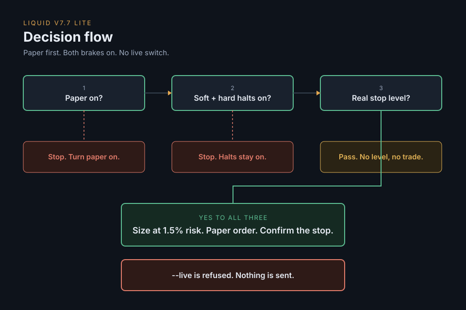

Agentic Trading for Dummies
Paper means simulated, not real money. These dials are locked. This page does not turn live trading on. The runner refuses --live.
Live stays off. There is no preset that turns it on. Soft halt and hard halt both stay on.

Start here
- Clone the repo and open the
runnerfolder. - Create a venv (a private folder of Python tools) and turn it on.
- Install the libraries. Copy
.env.exampleto.env. - In
.env, paste your model key, the Liquid URL, and the Liquid token. Leave every other line alone. Liquid is the exchange app. Paper must be on. - Run
--check. You wantmode=paper,riskFrac=0.015,softHalt=on,hardHalt=on. - Run
--live. Success is the wordREFUSED. Then the program stops. Nothing is sent. - Run
python runner.pyonce. You want a line withPAPER ONLY, then aPAPER REPORT.
Mac or Linux
git clone https://github.com/merjua14/Agentic-Trading-For-Dummies cd Agentic-Trading-For-Dummies/runner python3 -m venv .venv source .venv/bin/activate pip install -r requirements.txt cp .env.example .env python runner.py --check python runner.py --live python runner.py
Windows PowerShell
Only the venv lines change. Use these instead of python3 and source. If Windows blocks the script, run Set-ExecutionPolicy -Scope Process -ExecutionPolicy Bypass once, then activate again.
git clone https://github.com/merjua14/Agentic-Trading-For-Dummies cd Agentic-Trading-For-Dummies/runner py -m venv .venv .venv\Scripts\Activate.ps1 pip install -r requirements.txt copy .env.example .env python runner.py --check python runner.py --live python runner.py
What success looks like
If something breaks
Missing key
You see Missing key: and a name like ANTHROPIC_API_KEY, LIQUID_MCP_URL, or LIQUID_MCP_TOKEN. Open .env in the runner folder. Paste a value after each name. No quotes. No spaces around =. Save. Run python runner.py again.
Paper off
The report says paper is off. In Liquid, run enable_paper_trading, then paper_trading_status. You want paper on. Run python runner.py again. Leave paper on. Live mode stays refused.
Wrong directory
You see can't open file 'runner.py', No such file, or wrong directory. Run cd Agentic-Trading-For-Dummies/runner, then python runner.py --check. You should see mode=paper.
The same steps, the disclaimer, and the rulebook are in the repo. Nothing on this page promises a return.